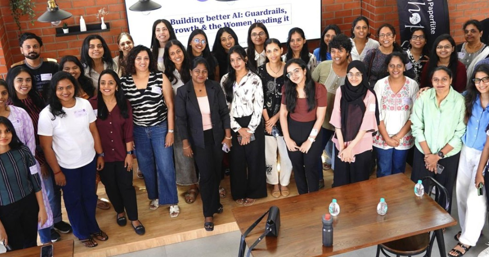
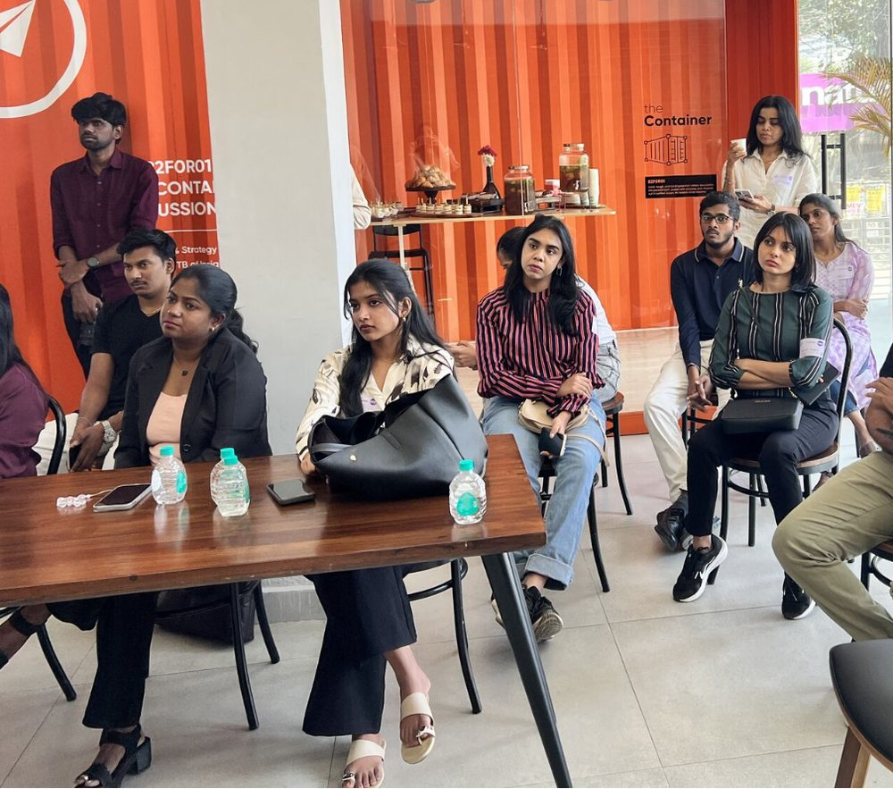

Hi, I’m Gayathri!
I build AI agents brands trust with their name, and I find the flaws before their users do. In one year I’ve built entire modules from use case to launch, and shipped agents that cut publishing from 45 minutes to 15.
I work where enterprise AI gets real: agents that read a link or a brief and do the work, workflows that cut human steps without losing control, and guardrails like approvals, a judge agent and a full audit trail that let big brands trust the output.
When I’m not working you’ll find me at Women in Product India meetups in Chennai, taking apart why some tech products win, and reading about how macroeconomics connects the world.
What I build
- AI agents for enterprise brandsShipped for regulated finance, retail and consumer-tech teams
- Optimised workflowsHuman steps removed where AI is reliable, kept where it matters
- Agents you connect and askPlug in a link, a brief or a data source, then just ask
Current Work
At Zocket I build AI Designer, a GenAI creative and content platform for enterprise marketing teams, as its AI Associate Product Manager. I take whole modules from use case to launch: I find where users will get stuck before they ever arrive, rework the flow until it feels effortless, write the PRD, and ship it with engineering and design.
This year I wrote 9 module PRDs and the clickable prototype for the 2026 revamp, and led 11 cross-functional initiatives, 10 of them shipped. I turned feedback from enterprise accounts into requirements and brand knowledge, so creatives stay on-brand and ready to publish.
- 45 → 15 minBlog turnaround for BFSI brands, with agents writing SEO and GEO optimised blogs, IPO articles and PR pieces
- 50% → 20%AI-detection score on published content, with SEBI and RBI compliance checks that suggest fixes
- 1 clickA compliant IPO article from a 400–700 page filing, ready for social and print
- 10 of 11Cross-functional initiatives shipped from the AI Designer roadmap
Previous Work
Before product, I was an engineer. I interned as a web developer at NSIC, a Government of India enterprise, building responsive interfaces and testing them on a live project.
At college I co-authored a published research paper on spotting vehicle damage with AI, reaching 85% accuracy, and shipped KnowSpot, a street news app for Chennai. I led the Computer Society of India chapter and ran a research symposium with 200+ registrations.
That engineering grounding is why I understand how a system works before I write the spec.
Case Studies
Five product cases on real 2026 moments, each following the same arc: context, problem, approach, decision, outcome, and what I’d do differently. They’re my own work on public information, not affiliated with the companies.
Community
I’m an active member of Women in Product India, and I show up regularly: roundtables, conferences and AI agent brainstorming sessions with product people who ship.
Roundtables are my favourite part. At each one, my table picks a real problem, argues its way to a use-case-driven product, and pitches it to the room against the clock. It’s the fastest discovery-to-pitch loop I know, and every round sharpens how I build at work: what goes into an AI, what it’s allowed to do, and what comes out.


Get in Touch
I’m looking for product roles on AI products. The quickest way to reach me is email.
gayathriv1619@gmail.com